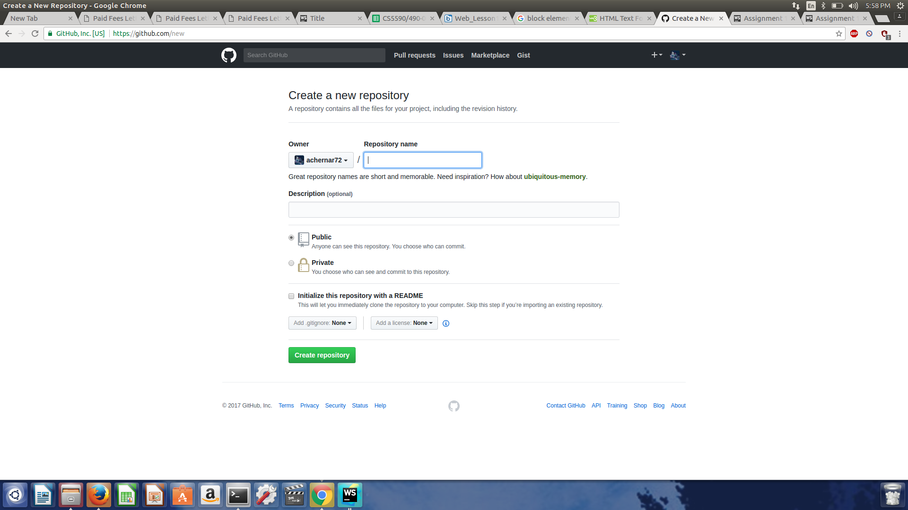
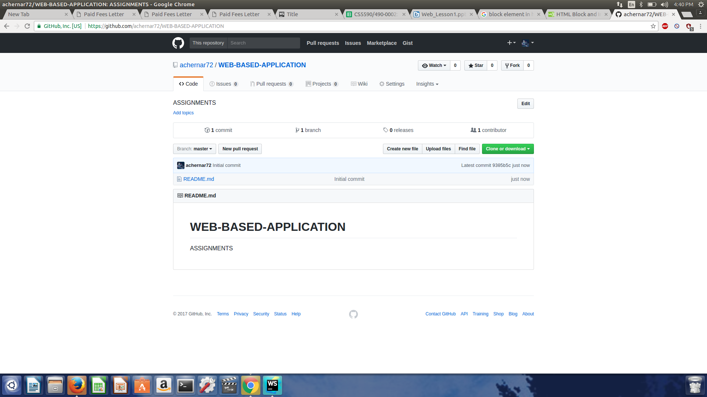
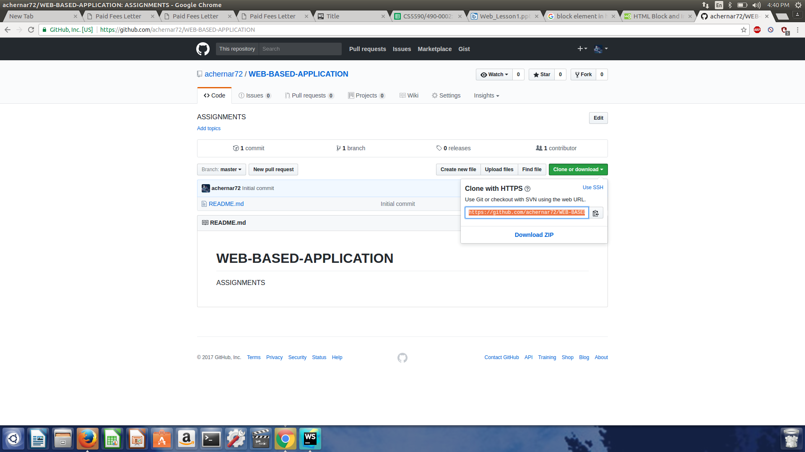
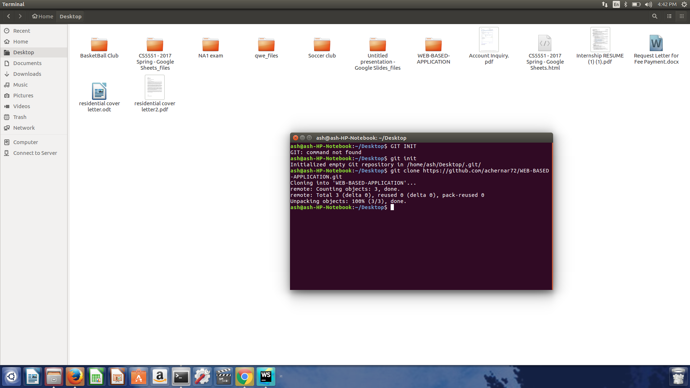
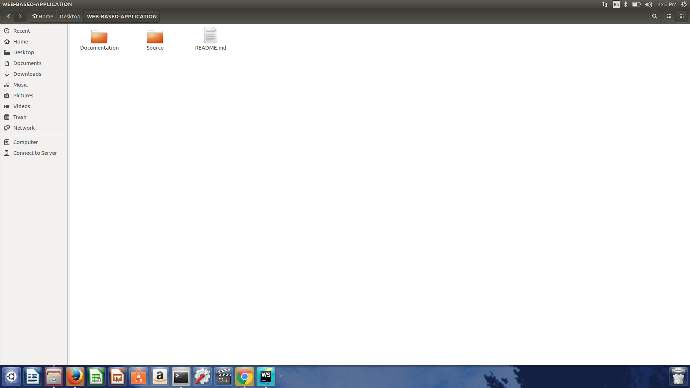

Creating the Repository and Files committing
It Involves several steps
1)Creating Repository
In order to create the repository, one should have to signIn with their own credentials and after login they have to redirect to the new repository.After going to the Repository then we should give name to the repository and select the button Initialize this repository with the readme.By following the screen shot you get a clear picture


2)Clone Repository
Now we have to clone the remote repository to local repository that means to the local machine.In order to do the clonning we have to copy the url and initialise the git in one of the folder and by typing the command
git clone https://github.com/achernar72/WEB-BASED-APPLICATION.git


3)Create Folders
Now we have to creatwe two folders named SOurce and DOcumentaion folder. Source folder is for the code part and Documentation is for the screen shots

4)Commit Files
Video Tutorial